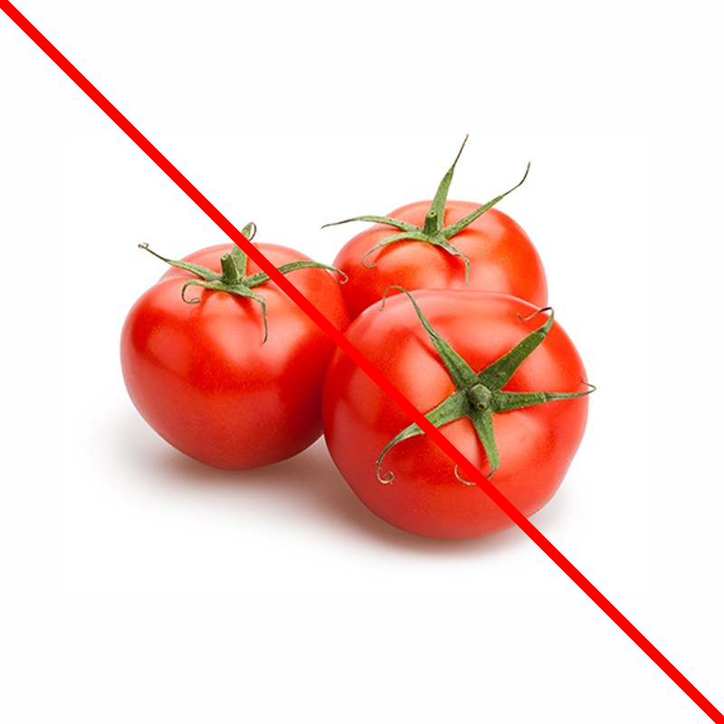
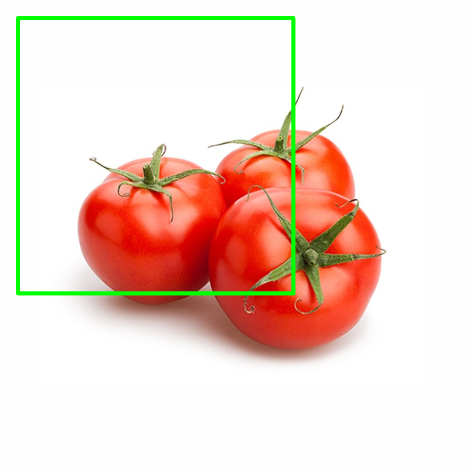
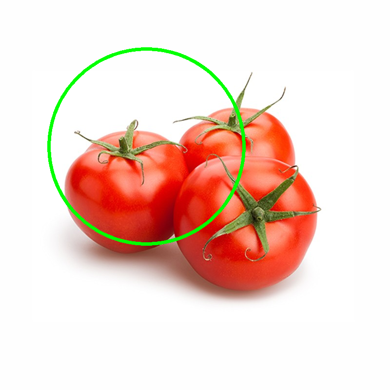
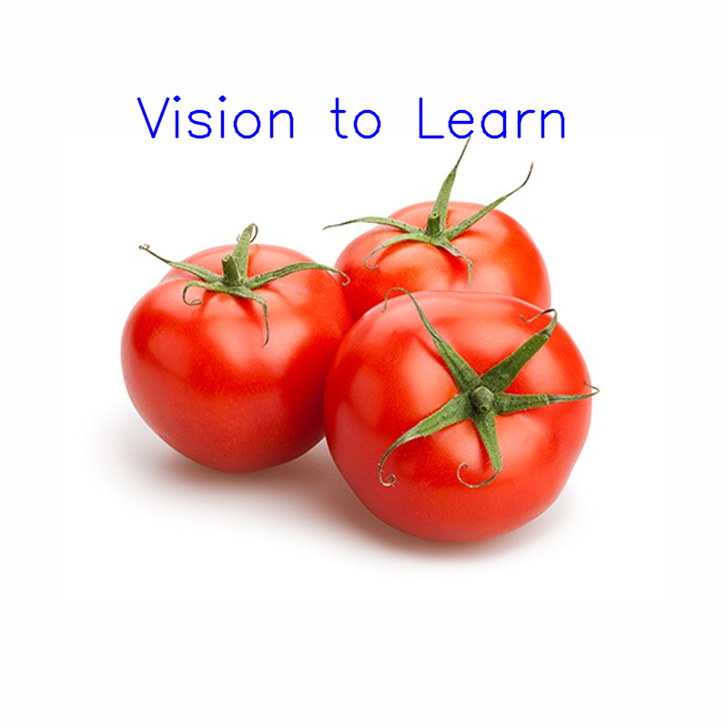

Please hold on for a moment...
Draw geometric shapes on images
Before drawing on the image we have to import an image. For this example we are using the 'tomatoes.jpg' image.
image = cv2.imread('tomatoes.jpg') |

Shape of the image
We will see what exactly this image contain. Lets just show the shape of image using the following code:image.shape >>(800, 800, 3) |
So as we can see for the x-axis and y-axis we can modify 800 pixels each. So lets draw the various shapes onto the image.
Line
Syntax:cv2.line(image_var, start-coordinates, end-coordinates, bgr-color,line-thickness)
Program
1 2 3 4 5 6 7 8 9 | import cv2 img = cv2.imread("tomatoes.jpg") #cv2.line(image_var, start-coordinates, end-coordinates, bgr-color,line-thickness) cv2.line(img, (0, 0), (800, 800), (0, 0, 255), 10) cv2.imshow('draw', img) cv2.waitKey() cv2.destroyAllWindows() |
A line is drawn from starting position (0,0) to the end position (800,800) i.e the shape of the image. Therefore making a diagonal line as shown in the image below.

Rectangle
Syntax:cv2.rectangle(image_var, top-left-coordinates, lower-right-coordinates, bgr-color, thickness)
Program
1 2 3 4 5 6 7 8 9 10 11 12 13 14 15 | import cv2 img = cv2.imread("tomatoes.jpg") #cv2.rectangle(image_var, # top-left-coordinates, # lower-right-coordinates, # bgr-color,thickness) cv2.rectangle(img, (30, 30), (500, 500), (0, 255, 0), 5) cv2.imshow('draw', img) cv2.waitKey() cv2.destroyAllWindows() |
A rectangle is drawn from top-left position (30,30) to the lower-right position (500,500) as shown in the image below.

Circle
Syntax:cv2.rectangle(image_var, center-coordinates, radius, bgr-color, thickness)
Program
1 2 3 4 5 6 7 8 9 10 11 12 13 14 15 | import cv2 img = cv2.imread("tomatoes.jpg") #cv2.rectangle(image_var, # center-coordinates, # radius, # bgr,thickness) cv2.circle(img, (300, 300), 200, (0, 255, 0), 5) cv2.imshow('draw', img) cv2.waitKey() cv2.destroyAllWindows() |
A circle is drawn with center coordinates as (300,300) and radius 200 as shown in the image below.

Text
Syntax:cv2.putText(image_var, text, starting-coordinates, font-type, font-size, bgr-color, thickness, line-type)
Program
1 2 3 4 5 6 7 8 9 10 11 12 13 14 15 16 17 | import cv2 img = cv2.imread("tomatoes.jpg") #cv2.putText(image_var, text, # starting-coordinates, # font-type, font-size, # bgr-color, thickness, line-type) font = cv2.FONT_HERSHEY_SIMPLEX cv2.putText(img, 'Vision to Learn', (150, 150), font, 2, (255, 0, 0), 2, cv2.LINE_AA) cv2.imshow('draw', img) cv2.waitKey() cv2.destroyAllWindows() |
A text is displayed at coordinates (150,150) as shown in the image below.

Completed Successfully!